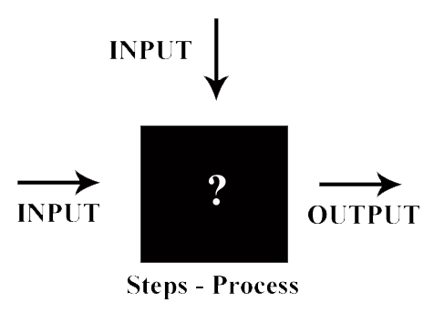
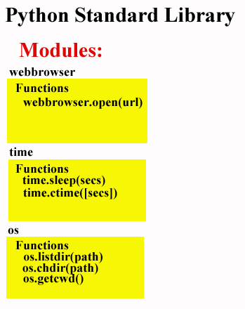
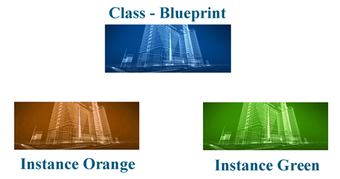
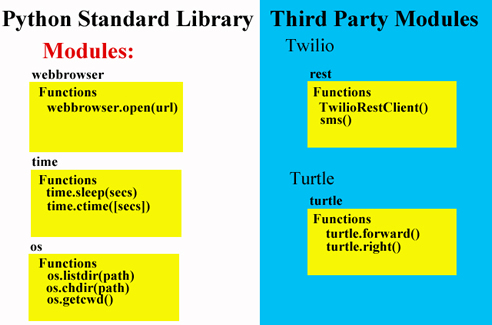
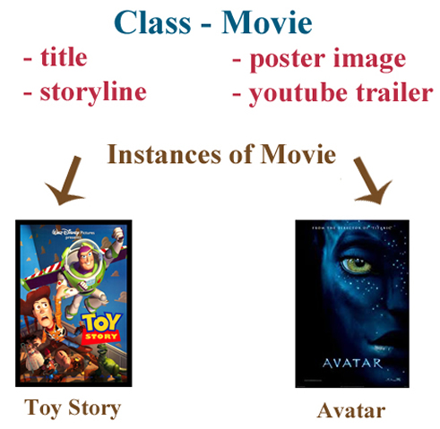
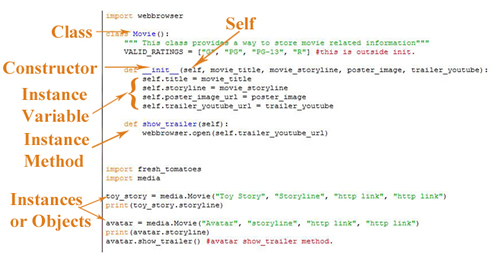

In order to tackle any programming problem we need to start thinking in abstract terms and not dwelve into the code immediately. We have to define three important things:
Abstract Thinking: The way I see it is as a a big black gox that we do not know what contains. All we know is what comes in and what comes out, so we need to figure out, step by step, how to get from one to the other. 
Programming has evolved over time. Before functional or procedural programming was based on instructions that followed sequential steps or execution of instructions that, like all programming used data and functions. The problem with such type of programming was that because it was a sequential way of programming it created very long programs that made it very difficult to debug, understand, and build on it. Examples of such programming languages are: Perl, C, VB, Fortran, Basic, etc. Because of it, repeated code was common.
Welcome OOP (Object Oriented Programming), which created a new way to code; it introduced objects, which are separate entities that have a behavior (called methods) and characteristics (or data). These objects in the code communicate sending and receiving data and instructions among themselves. Examples of OOP are Java, C#, NET, VB.NET, Action Script, Python, etc. Because each object has been tested and used before, the probabilities of mistakes are greatly reduced.
The advantages of OOP are:
Once we have established the input and the output, we begin describing in siimple words the steps we need to take to accomplish our goal. This process of writing down in simple words what we need to do is what is called pseudocde because it is not the actual code, but it helps us to clarify the process and structure of the code we need.
Abstract Thinking: Pseudocode is similar to trying to resolve a math problem in a math class. First we have to understand the problem and what is being asked (the output). Then we proceed to understand the elements that we are given (input) such as perhaps velocity, direction, mass, etc. Then we start writing what we need to do to solve the problem without actually writing a formula yet.
Take a Break Example: An example was given to demostrate the use of pseudocode. We wanted to create a program that would alert a user that too much time has passed between breaks. The program will make a Web browser to pop up every two hours that would make the user to stop working and enojoy a music video.
....webbrowser.open("https://www.youtube.com/watch?v=hkO9blVl84A") ....break_count = break_count + 1
Abstract Thinking: Just as we use physical or online libraries to find out details about a person, thing, or event, say for excample about the individual parts of the combustion engine, and perhaps how the pistons work, likewise, Python and third party companies and programmers provide us with entensive collections and a description of what they do.
Python provides a collection of pre-written pieces of programming code that we can use in our programs. The individual files are called modules, and you can call all or part of a module as you need. Each Python version provides a Library. The modules are explained in as to what they do and their structure; and they can be checked out and copied just as one would copy items from a library book. They library for version 2.7.1 can be found at https://docs.python.org/2/library/
Abstract Thinking: Just as Ford Motor Company does not have to recreate a new carburator each time a car is made, but rather a model, or template, has been made for each part that allows the machines to reproduce them in mass quantities, objects can be reused that will accelerate the creation of a program by a developer.
The use pre-written code (from the PSL or from other sources) that makes our life easier as they act as templates too.
Example: In the prior example code "time", and "webbrowser" are modules from the PSL (Python Standard Library) that were "called" or imported into our code. That means that pre-written modules have been written and we are able to use them. The functions "ctime" (current time) and "sleep" are methods, or functions, of the time module that allows us to input the current time and suspend the execution of the code in seconds.
Abstraction is the hiding of the code in libraries. This allows us to 1) Concentrate on what we want them for and, 2) It empowers us to use them simply by reading the documentation. The PSL is full of example code that demostrates abstraction.

Abstract Thinking: We can think about abstraction as Coca-Cola hiding its secret formula but allowing any cook to use the liquid say, for the creation of a dish or a dessert. A chef would not have to create acquire and find out how to make the cola, but just use the ready made liquid and use it, concentrating on his creativity, rather than having to recreate the drink on his own, spending time and money on it.
When you want to import (or call) a function from the PSL in your code you need to start your code with the command import so that Python knows where to look for that module.
Abstract Thinking: Just as in HTML we add a link in the head section of the code that points to the css stylesheet that will indicate the formatting options selected for that Web page, that is, importing or calling that CSS formatting into the Web page, likewise Python allows us to import or call a module.
An example was given through a project that needed to access files from a folder and change the names by deleting numbers in their names, so that those jpg files would re-organized and reveal a secret code. This is the code produced that exemplifies the calling of a module and its use through out the code:
import os
def rename_files():
# (1) Get File names from a folder
...file_list = os.listdir (r"C:\Users\Rod\Documents\Udacity\Stage3\Downloads\SecretMessage\prank")
...print(file_list)
...saved_path = os.getcwd()
...print("Current Working Directory is "+saved_path)
...os.chdir(r"C:\Users\Rod\Documents\Udacity\Stage
3\Downloads\SecretMessage\prank")
# (2) for each file, rename filename for file_name in file_list:
...print("Old Name - "+file_name)
...print("New Name - "+file_name.translate(None, "0,1,2,3,4,5,6,7,8,9)
...os.rename(file_name, file_name.translate("tel aviv.jpg", "telaviv.jpg"))
...os.chdir(saved_path)
rename_files()
Here you can see how at the beginning of our code the "os" module was imported. Then, you will notice functions that belong to the "os" module are called throughout the code, such as listdir (list directory), "getcwd" (get currect directory, "chdir" (change directory, "rename" (rename - for changing the file names). As it can be noted we did not have to write the code to do these tasks, but rather we called (or used) existing code contained in the PSL under the OS (Operating System) module, saving us time and possible errors. This is another example of Abstraction.
A "Class" was compared to the blueprint of a building. When we design the class code we will use it to create copies, called "instances" of the original blueprint, or class. These instances then can have different features that will make them unique to other instances and to the original class, but they remain a copy of the original in its structure. 
The power of classes is that instead of having to write many lines of code in repeting functions, knowing that certain functions will be used over and over again, a class can be used to create instances of that code that is re-using the code saving us much work. Another great benefit is that it follows a construct similar to the way our brains build solutions, making it much easier to follow and understand.
Abstract Thinking: For example, is CSS classes are used also as a template. We could define for excample a class for the characteristics (font, size, color) that we would like to use for all h2 headers. By specifying that all h1 headers in a Web page would share the same characteristics, we would not have to format each h1 header every time we use one in our Web page. Sub classes, or instances could be compared, for example, with the code used in this Web page. We have a class called content, and sub classes, or instances of that class called content-title and content-description.
In Object Oriented Programming, such as Python, classes help us to put functions and variables together in a way that they can see each other and work together, be replicated, and altered as needed (reusing methods), and not when unneeded. When similar code is written at the class level and in the instance level, the code in the instance level has precedence and the one in the class level will be ignored.
A great comparison was made by an instructor between as to how to differentiate a class from an object. A class is an abstract thing, such as a blueprint or a fish. They are only representations of something, but they are not the actual thing. An object, on the other hand, would be the physical representation as the Empire Building, or a little golden fish named "Dorothy" are.
To build a class you should take the same approach than when building any code. Again you have a black box and you have to figure out what are the inputs, the output and the process by which you will obtain that output. You also need to consider what elements will your code have. As an example we were asked to build a movie trailer Web site where this was applied. To define a class we follow the following structure:
class class_name:
...[Statement 1]
...[Statement 2]
...[Statement 3]
...etc
We determined that our Web site would have to have the title of the movies, the storyline, its poster, and the movie trailer. However, in order to do so we had to understand how to make instances in the code. To exemplify this we created a flower using code.
The code follows:
import turtle
def draw_square(some_turtle):
...for i in range(1,4):
...some_turtle.forward(100)
...some_turtle.right(120)
def draw_art():
...window = turtle.Screen()
...window.bgcolor("black")
...rod = turtle.Turtle()
...rod.shape("classic")
...rod.color("orange")
...rod.speed(100)
...for i in range(1,37):
......draw_square(rod)
......rod.right(10)
...for i in range(1,3):
......rod.right(90)
......rod.forward(250)
......rod.right(90)
......rod.forward(5)
...mike = turtle.Turtle()
...mike.shape("classic")
...mike.color("yellow")
...mike.speed(100)
...for i in range(1,5):
......draw_square(mike)
......mike.left(100)
...dan = turtle.Turtle()
...dan.shape("classic")
...dan.color("blue")
...dan.speed(100)
...for i in range(1,5):
......draw_square(dan)
......dan.right(100)
...window.exitonclick()
draw_art()
As it can be appreciated "rod", "mike", and "dan" are all instances using the Turtle class and the "draw_square" method, not haveing to rewrite the code for all three instances but sharing it and then differentiating each one with different commands.
Although the PSL is very extensive, sometimes the need arises to use methods that are not contained in it, but rather developed by third party companies or other programmers. However, using them is as simple, and they follow the same structure as the ones contained in the PSL.
Abstract Thinking: I remember years ago when I was trying to incorporate animation into a Web page. Action Script 2 had just been released so I went looking for pre made code that I could import into my Web page without having to worry in spending time in learning how the code worked or learning to code it for myself. in OOP we do not have to take the time to write the code into our own, making it even longer, but just importing it (calling it) into our code by specifying from where it will come and what module we desire to import, and using the functions we need.
To exemplify this we proceeded to write code that would send a text message to our phone. We found a third party company, with the name of "Twilio" that developed a module for this named "rest". Once we subscribed and received a client account were were able to import the class and method to proceed.
from twilio import rest
# Your Account Sid and Auth Token from twilio.com/user/account
account_sid = "ACe5debac4503613fb1a34ce114a3c732f"
auth_token = "{{e0ca57666fe9fb25cf81f7cc82751f2a}}"
client = rest.TwilioRestClient(account_sid, auth_token)
message = client.messages.create(body="My name is Rod Juarez?",
...to="+18129897841", # Replace with your phone number
...from_="+15028225361") # Replace with your Twilio number
print message.sid

It is always important, as it was stated before, to first consider what inputs we will need, what output is desired, and what steps to take. Then to proceed to write down in pseudocode the steps, and finally start testing each small portion of code we write. Finally, once our code is working properly, we need to step back and consider how to simplify and improve on our code.
Just as we imported third party modules, we can connect our code to use Web sites. To accomplish this we used imported urllib method from the PSL. The method urlopen(url was used to open the desired Web site and once our code was added to this particular Web site that checked if a string contained profanity or not. This demonstrated successfully how to connect our code to a Web site and return a response. Urllib works similar to open, except that it opens a Web Browser page instead than a folder or file in a computer. The code follows.
import urllib
def read_text():
...quotes = open("C:\Users\Rod\Documents\Udacity\Stage 3\Profanity Project\movie_quotes.txt")
...contents_of_file = quotes.read()
...#print(contents_of_file)
...quotes.close()
...check_profanity(contents_of_file)
def check_profanity(text_to_check):
...connection = urllib.urlopen("http://www.wdyl.com/profanity?q="+text_to_check)
...output = connection.read()
...#print(output)
...connection.close()
...if "true" in output:
......print("Profanity Alert!")
...elif "false" in output:
......print("This document has no curse words!")
...else:
......print("Could not scan the document propertly.")
read_text()
Through the use of an external module and its methods we were able to enlace our code and increase its power through the Internet, true automatation!
We must consider then what objects are necessary for our proeject. Once we identify those objects we have to consider how many of those objects will be used again as we can see in the project we did for movie trailers Web site.

As we can see in the prior example, we know that our instances of movie will share a title name, a movie storyline, a movie poster, and a youtube movie trailer. Because we know that every instance of movies we want to show in our Web site will share the same objects, we can then create our class movie that will contain these objects for all the elements to share. Then each instance will contain different objects that will make them unique and that will not be in the class level, but in the instance level.
As we already wrote, a class is like a blueprint that can contain both data and methods that will be reused in the instances. General Python conventions dictate that the class be named capitalized, so in the movie example it would be class Movie. Good Python conventions also dictate that the class code be written in one file and the methods that call that class be in another. The advatanges of classes are:
So our class Movie will contain the data:
- title
- storyline
-poster_movie
youtube_trailer
And it will do:
- show.trailer()
Abstract Thinking: Years aga, when I was a kid, I remember they used to sell molds where you could pour liquid plastic that would harden and we could obtain little soldiers and other figures out of it. I remember making the figure of a soldier and painted several in green and others in blue creating two armies. It was the same figure, the only thing that made them different were the color. This is a good example of an instance of a class. The class would be the soldier, and the instances would be the green instance of the soldier, and the blue instance of the same soldier.
In order to initialize our code we need a method that will do that. One of such methods is --init__( ). A constructor not initializes our code, but it reserves new space in memory for the instance that we are calling, in our example toy_story and avatar would each have a reserved space in memory. The word "constructor" comes from the fact that they build the object we are creating, and it is a method. A constructor is used everytime we create an object. Classes, instances, and constructors are part of all OOP (Object Oriented Programming) languages. Constructors first prepare the new object for use, and then it accepts arguments that it uses to set our variables.
An instance is an object of a class that inherits attributes and instructions from the class. So in our example, toy_story and avatar are both instances, or objects defined by the class Movie, so they are copies of the blueprint. An instance is also called an object of a class.
Self is all the data associated with the instance and it is a keyword used as the first argument of a method because the first argument is the object instance, so it must be explicitly defined in every class method. An example would be:
class bar(object):
...bankrupt = false
...def open_branch(self):
......if not self.bankrupt:
.........print("branch opened")
So first we created a class called bar. Then we assigned it a property called bankrupt, which in this instance is false. Then we used a function called open_branch taht can only happen if bankrupt is false. Self identifies this property to this instance.
Abstract Thinking: Self reminds me of the military. Soldiers always have to end their addressing to their superiors as Sir. So when answering say a Sargeant, the will respond Yes, Sarge, sir. The last sir seems irrelevant, but it emphasizes the respect to that particular officer. The keyword self emphasizes that it is referring to that particular instance too. It might be repetitive but it is a convention that must be followed.
We have said that a class contains data and methods that are shared by the different instances. Nonetheless, some variables belong only to an instance and are not intended to be shared by other instances. Those variables that are unique to an object are called Instance Variables, and are accessed using the self keyword inside a class, and the instance name anme outside a class.
All of the functions, or methods inside a class that are associated with an instance that have the keyword self are called Instance Methods.
Inheritance simply means that the characteristics of the class are transferred to the instances of the class or objects.
When you have a class, such as pets, sometimes it is necessary to create a subclass also called a child class, such as a child class dog or cat. The main class is called the parent class. There are three ways that the parent and child classes can interact:
The following diagram will illustrate better our new words.

There are two types variables:- class variables and object variables depending on whether the class or the object owns the variables. Class variables are shared in the sense that they are accessed by all objects (instances) of that class. The class variable acts as a blueprint or master, so when any one object makes a change to a class variable, the change is reflected in all the other instances as well. An object variables on the other hand are owned by each individual object (instance) of the class. Each object acts as its own copy, so these variables are not shared and are not related in any way to the field by the same name in a different instance of the same class.
For example, should we decide to add a movie_ratings variable list to our class Movie, this variable would be shared by all the instances of the class Movie (toy_story, avatar, etc), that would work outside the __init__() constructor. Convention dictates that when a class viariable list is constant, that is, its elements are not going to change, as in the case of our movie ratings (["G", "PG", "PG-13", "R"]), each element in the list should be all uppercase letters.
As mentioned before, a Method Overriding means that when a method with the same name of a method in the child class is defined with the same name as in the parent class, the one in the child class takes precedence and the one in the parent class is ignored.